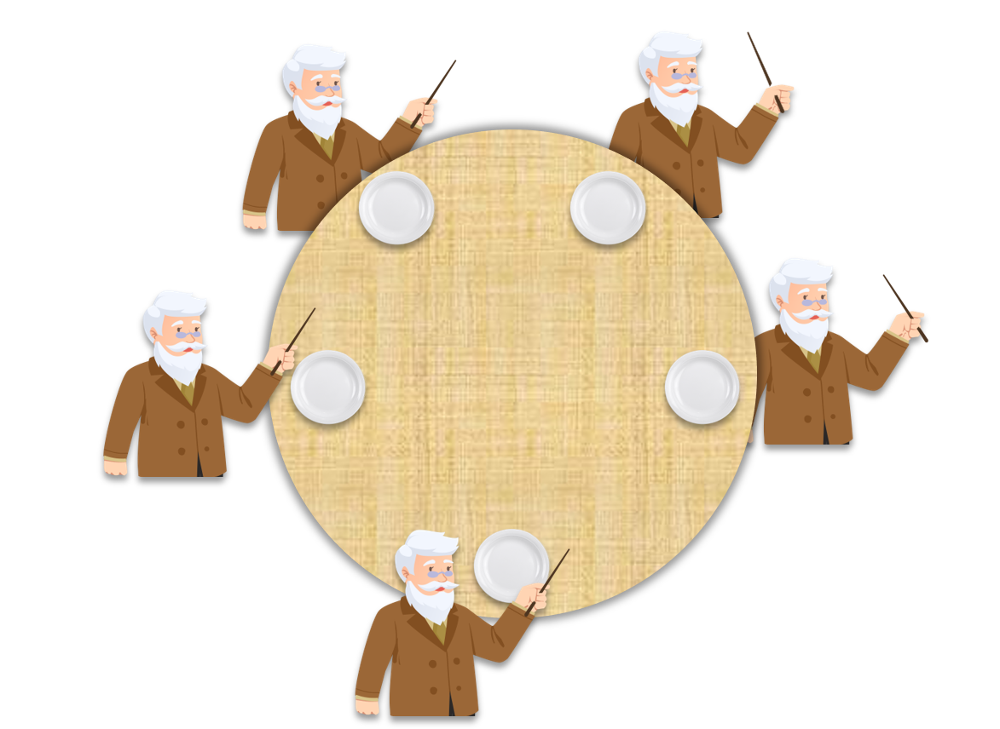

- 00 由点及面，搭建你的 Java 并发知识网.md.html
- 01 为何说只有 1 种实现线程的方法？.md.html
- 02 如何正确停止线程？为什么 volatile 标记位的停止方法是错误的？.md.html
- 03 线程是如何在 6 种状态之间转换的？.md.html
- 04 waitnotifynotifyAll 方法的使用注意事项？.md.html
- 05 有哪几种实现生产者消费者模式的方法？.md.html
- 06 一共有哪 3 类线程安全问题？.md.html
- 07 哪些场景需要额外注意线程安全问题？.md.html
- 08 为什么多线程会带来性能问题？.md.html
- 09 使用线程池比手动创建线程好在哪里？.md.html
- 10 线程池的各个参数的含义？.md.html
- 11 线程池有哪 4 种拒绝策略？.md.html
- 12 有哪 6 种常见的线程池？什么是 Java8 的 ForkJoinPool？.md.html
- 13 线程池常用的阻塞队列有哪些？.md.html
- 14 为什么不应该自动创建线程池？.md.html
- 15 合适的线程数量是多少？CPU 核心数和线程数的关系？.md.html
- 16 如何根据实际需要，定制自己的线程池？.md.html
- 17 如何正确关闭线程池？shutdown 和 shutdownNow 的区别？.md.html
- 18 线程池实现“线程复用”的原理？.md.html
- 19 你知道哪几种锁？分别有什么特点？.md.html
- 20 悲观锁和乐观锁的本质是什么？.md.html
- 21 如何看到 synchronized 背后的“monitor 锁”？.md.html
- 22 synchronized 和 Lock 孰优孰劣，如何选择？.md.html
- 23 Lock 有哪几个常用方法？分别有什么用？.md.html
- 24 讲一讲公平锁和非公平锁，为什么要“非公平”？.md.html
- 25 读写锁 ReadWriteLock 获取锁有哪些规则？.md.html
- 26 读锁应该插队吗？什么是读写锁的升降级？.md.html
- 27 什么是自旋锁？自旋的好处和后果是什么呢？.md.html
- 28 JVM 对锁进行了哪些优化？.md.html
- 29 HashMap 为什么是线程不安全的？.md.html
- 30 ConcurrentHashMap 在 Java7 和 8 有何不同？.md.html
- 31 为什么 Map 桶中超过 8 个才转为红黑树？.md.html
- 32 同样是线程安全，ConcurrentHashMap 和 Hashtable 的区别.md.html
- 33 CopyOnWriteArrayList 有什么特点？.md.html
- 34 什么是阻塞队列？.md.html
- 35 阻塞队列包含哪些常用的方法？add、offer、put 等方法的区别？.md.html
- 36 有哪几种常见的阻塞队列？.md.html
- 37 阻塞和非阻塞队列的并发安全原理是什么？.md.html
- 38 如何选择适合自己的阻塞队列？.md.html
- 39 原子类是如何利用 CAS 保证线程安全的？.md.html
- 40 AtomicInteger 在高并发下性能不好，如何解决？为什么？.md.html
- 41 原子类和 volatile 有什么异同？.md.html
- 42 AtomicInteger 和 synchronized 的异同点？.md.html
- 43 Java 8 中 Adder 和 Accumulator 有什么区别？.md.html
- 44 ThreadLocal 适合用在哪些实际生产的场景中？.md.html
- 45 ThreadLocal 是用来解决共享资源的多线程访问的问题吗？.md.html
- 46 多个 ThreadLocal 在 Thread 中的 threadlocals 里是怎么存储的？.md.html
- 47 内存泄漏——为何每次用完 ThreadLocal 都要调用 remove()？.md.html
- 48 Callable 和 Runnable 的不同？.md.html
- 49 Future 的主要功能是什么？.md.html
- 50 使用 Future 有哪些注意点？Future 产生新的线程了吗？.md.html
- 51 如何利用 CompletableFuture 实现“旅游平台”问题？.md.html
- 52 信号量能被 FixedThreadPool 替代吗？.md.html
- 53 CountDownLatch 是如何安排线程执行顺序的？.md.html
- 54 CyclicBarrier 和 CountdownLatch 有什么异同？.md.html
- 55 Condition、object.wait() 和 notify() 的关系？.md.html
- 56 讲一讲什么是 Java 内存模型？.md.html
- 57 什么是指令重排序？为什么要重排序？.md.html
- 58 Java 中的原子操作有哪些注意事项？.md.html
- 59 什么是“内存可见性”问题？.md.html
- 60 主内存和工作内存的关系？.md.html
- 61 什么是 happens-before 规则？.md.html
- 62 volatile 的作用是什么？与 synchronized 有什么异同？.md.html
- 63 单例模式的双重检查锁模式为什么必须加 volatile？.md.html
- 64 你知道什么是 CAS 吗？.md.html
- 65 CAS 和乐观锁的关系，什么时候会用到 CAS？.md.html
- 66 CAS 有什么缺点？.md.html
- 67 如何写一个必然死锁的例子？.md.html
- 68 发生死锁必须满足哪 4 个条件？.md.html
- 69 如何用命令行和代码定位死锁？.md.html
- 70 有哪些解决死锁问题的策略？.md.html
- 71 讲一讲经典的哲学家就餐问题.md.html
- 72 final 的三种用法是什么？.md.html
- 73 为什么加了 final 却依然无法拥有“不变性”？.md.html
- 74 为什么 String 被设计为是不可变的？.md.html
- 75 为什么需要 AQS？AQS 的作用和重要性是什么？.md.html
- 76 AQS 的内部原理是什么样的？.md.html
- 77 AQS 在 CountDownLatch 等类中的应用原理是什么？.md.html
- 78 一份独家的 Java 并发工具图谱.md.html
- 捐赠
71 讲一讲经典的哲学家就餐问题
本课时我们介绍经典的哲学家就餐问题。
问题描述
哲学家就餐问题也被称为刀叉问题，或者吃面问题。我们先来描述一下这个问题所要说明的事情，这个问题如下图所示：

有 5 个哲学家，他们面前都有一双筷子，即左手有一根筷子，右手有一根筷子。当然，这个问题有多个版本的描述，可以说是筷子，也可以说是一刀一叉，因为吃牛排的时候，需要刀和叉，缺一不可，也有说是用两把叉子来吃意大利面。这里具体是刀叉还是筷子并不重要，重要的是必须要同时持有左右两边的两个才行，也就是说，哲学家左手要拿到一根筷子，右手也要拿到一根筷子，在这种情况下哲学家才能吃饭。为了方便理解，我们选取和我国传统最贴近的筷子来说明这个问题。
为什么选择哲学家呢？因为哲学家的特点是喜欢思考，所以我们可以把哲学家一天的行为抽象为思考，然后吃饭，并且他们吃饭的时候要用一双筷子，而不能只用一根筷子。
1. 主流程
我们来看一下哲学家就餐的主流程。哲学家如果想吃饭，他会先尝试拿起左手的筷子，然后再尝试拿起右手的筷子，如果某一根筷子被别人使用了，他就得等待他人用完，用完之后他人自然会把筷子放回原位，接着他把筷子拿起来就可以吃了（不考虑卫生问题）。这就是哲学家就餐的最主要流程。
2. 流程的伪代码
我们来看一下这个流程的伪代码，如下所示：
while(true) {
// 思考人生、宇宙、万物...
think();
// 思考后感到饿了，需要拿筷子开始吃饭
pick_up_left_chopstick();
pick_up_right_chopstick();
eat();
put_down_right_chopstick();
put_down_left_chopstick();
// 吃完饭后，继续思考人生、宇宙、万物...
}
while(true) 代表整个是一个无限循环。在每个循环中，哲学家首先会开始思考，思考一段时间之后（这个时间长度可以是随机的），他感到饿了，就准备开始吃饭。在吃饭之前必须先拿到左手的筷子，再拿到右手的筷子，然后才开始吃饭；吃完之后，先放回右手的筷子，再放回左手的筷子；由于这是个 while 循环，所以他就会继续思考人生，开启下一个循环。这就是整个过程。
有死锁和资源耗尽的风险
这里存在什么风险呢？就是发生死锁的风险。如下面的动画所示：

根据我们的逻辑规定，在拿起左手边的筷子之后，下一步是去拿右手的筷子。大部分情况下，右边的哲学家正在思考，所以当前哲学家的右手边的筷子是空闲的，或者如果右边的哲学家正在吃饭，那么当前的哲学家就等右边的哲学家吃完饭并释放筷子，于是当前哲学家就能拿到了他右手边的筷子了。
但是，如果每个哲学家都同时拿起左手的筷子，那么就形成了环形依赖，在这种特殊的情况下，每个人都拿着左手的筷子，都缺少右手的筷子，那么就没有人可以开始吃饭了，自然也就没有人会放下手中的筷子。这就陷入了死锁，形成了一个相互等待的情况。代码如下所示：
public class DiningPhilosophers {
public static class Philosopher implements Runnable {
private Object leftChopstick;
private Object rightChopstick;
public Philosopher(Object leftChopstick, Object rightChopstick) {
this.leftChopstick = leftChopstick;
this.rightChopstick = rightChopstick;
}
@Override
public void run() {
try {
while (true) {
doAction("思考人生、宇宙、万物、灵魂...");
synchronized (leftChopstick) {
doAction("拿起左边的筷子");
synchronized (rightChopstick) {
doAction("拿起右边的筷子");
doAction("吃饭");
doAction("放下右边的筷子");
}
doAction("放下左边的筷子");
}
}
} catch (InterruptedException e) {
e.printStackTrace();
}
}
private void doAction(String action) throws InterruptedException {
System.out.println(Thread.currentThread().getName() + " " + action);
Thread.sleep((long) (Math.random() * 10));
}
}
public static void main(String[] args) {
Philosopher[] philosophers = new Philosopher[5];
Object[] chopsticks = new Object[philosophers.length];
for (int i = 0; i < chopsticks.length; i++) {
chopsticks[i] = new Object();
}
for (int i = 0; i < philosophers.length; i++) {
Object leftChopstick = chopsticks[i];
Object rightChopstick = chopsticks[(i + 1) % chopsticks.length];
philosophers[i] = new Philosopher(rightChopstick, leftChopstick);
new Thread(philosophers[i], "哲学家" + (i + 1) + "号").start();
}
}
}
在这个代码中，有一个内部类叫作 Philosophers，是哲学家的意思。在创建这个哲学家实例，也就是调用构造方法的时候，需要传入两个参数，分别是左手的筷子和右手的筷子。Philosophers 类实现了 Runnable 接口，在它的 run 方法中是无限循环，每个循环中，会多次调用 doAction 方法。在这里的 doAction 方法的定义在下方，这个方法实际上就是把当前输入的字符串给打印出来，并且去进行一段随机时间的休眠。
这里的随机休眠是为了模拟真实的场景，因为每个哲学家的思考、吃饭和拿筷子的时间会各不相同。同样，在线上的实际场景中，这个时间也肯定是不相同的，所以我们用随机数来模拟。
我们继续看 while 中的代码，哲学家会首先思考人生，然后获取左边筷子这把锁，并打印出“拿起左边的筷子”；接着他去获取右边筷子这把锁，并会打印出“拿起右边的筷子”、“吃饭”，并且“放下右边的筷子”，接下来，他会退出右边筷子的这个同步代码块，释放锁；最后打印出“放下左边的筷子”，随即退出左边筷子的这个同步代码块，释放锁。这样就完成了这个过程，当然他会继续进行 while 循环。
最后我们来看一下 main 方法，main 方法中新建了 5 个哲学家，并按照哲学家的数量去新建对应数量的筷子，并且把它们都初始化出来。筷子只用于充当锁对象，所以就把它定义为一个普通的 Object 类型。
接下来，我们需要初始化哲学家。初始化哲学家需要两个入参，分别是左手筷子和右手筷子，在这里会选取之前定义好的 chopsticks 数组中的对象来给 leftChopstick 和 rightChopstick 进行合理的赋值。当然有一种特殊情况，那就是考虑到最后一个哲学家右手的筷子，由于它已经转完了桌子的一圈，所以他实际上拿的还是第一根筷子，在这里会进行一个取余操作。
创建完哲学家之后，就会把它作为 Runnable 对象，传入 Thread，创建一个线程并启动。在 for 循环执行完毕之后，5 个哲学家都启动了起来，于是他们就开始思考并且吃饭。其中一种可能的执行结果如下所示：
哲学家1号 思考人生、宇宙、万物...
哲学家3号 思考人生、宇宙、万物...
哲学家2号 思考人生、宇宙、万物...
哲学家4号 思考人生、宇宙、万物...
哲学家5号 思考人生、宇宙、万物...
哲学家4号 拿起左边的筷子
哲学家5号 拿起左边的筷子
哲学家1号 拿起左边的筷子
哲学家3号 拿起左边的筷子
哲学家2号 拿起左边的筷子
哲学家 1、3、2、4、5 几乎同时开始思考，然后，假设他们思考的时间比较相近，于是他们都在几乎同一时刻想开始吃饭，都纷纷拿起左手的筷子，这时就陷入了死锁状态，没有人可以拿到右手的筷子，也就没有人可以吃饭，于是陷入了无穷等待，这就是经典的哲学家就餐问题。
多种解决方案
对于这个问题我们该如何解决呢？有多种解决方案，这里我们讲讲其中的几种。前面我们讲过，要想解决死锁问题，只要破坏死锁四个必要条件的任何一个都可以。
1. 服务员检查
第一个解决方案就是引入服务员检查机制。比如我们引入一个服务员，当每次哲学家要吃饭时，他需要先询问服务员：我现在能否去拿筷子吃饭？此时，服务员先判断他拿筷子有没有发生死锁的可能，假如有的话，服务员会说：现在不允许你吃饭。这是一种解决方案。
2. 领导调节
我们根据上一讲的死锁检测和恢复策略，可以引入一个领导，这个领导进行定期巡视。如果他发现已经发生死锁了，就会剥夺某一个哲学家的筷子，让他放下。这样一来，由于这个人的牺牲，其他的哲学家就都可以吃饭了。这也是一种解决方案。
3. 改变一个哲学家拿筷子的顺序
我们还可以利用死锁避免策略，那就是从逻辑上去避免死锁的发生，比如改变其中一个哲学家拿筷子的顺序。我们可以让 4 个哲学家都先拿左边的筷子再拿右边的筷子，但是有一名哲学家与他们相反，他是先拿右边的再拿左边的，这样一来就不会出现循环等待同一边筷子的情况，也就不会发生死锁了。
死锁解决
我们把“改变一个哲学家拿筷子的顺序”这件事情用代码来写一下，修改后的 main 方法如下：
public static void main(String[] args) {
Philosopher[] philosophers = new Philosopher[5];
Object[] chopsticks = new Object[philosophers.length];
for (int i = 0; i < chopsticks.length; i++) {
chopsticks[i] = new Object();
}
for (int i = 0; i < philosophers.length; i++) {
Object leftChopstick = chopsticks[i];
Object rightChopstick = chopsticks[(i + 1) % chopsticks.length];
if (i == philosophers.length - 1) {
philosophers[i] = new Philosopher(rightChopstick, leftChopstick);
} else {
philosophers[i] = new Philosopher(leftChopstick, rightChopstick);
}
new Thread(philosophers[i], "哲学家" + (i + 1) + "号").start();
}
}
在这里最主要的变化是，我们实例化哲学家对象的时候，传入的参数原本都是先传入左边的筷子再传入右边的，但是当我们发现他是最后一个哲学家的时候，也就是 if (i == philosophers.length - 1) ，在这种情况下，我们给它传入的筷子顺序恰好相反，这样一来，他拿筷子的顺序也就相反了，他会先拿起右边的筷子，再拿起左边的筷子。那么这个程序运行的结果，是所有哲学家都可以正常地去进行思考和就餐了，并且不会发生死锁。
总结
下面我们进行总结。在本课时，我们介绍了什么是哲学家就餐问题，并且发现了这其中蕴含着死锁的风险，同时用代码去演示了发生死锁的情况；之后给出了几种解决方案，比如死锁的检测与恢复、死锁避免，同时我们对于死锁避免的这种情况给出了代码示例。
© 2019 - 2023 Liangliang Lee. Powered by gin and hexo-theme-book.